QImageBench Scores
1. Setup
| Model | Prompt upsampling | Prompt fed to the model | Resolution | Sampling / other | run | |
|---|---|---|---|---|---|---|
| GPT-image-2.5 sunburst, quality low | None (handled inside the API) | Original prompt (natural language) | 1024² | quality=low | gpt_image_2p5_sunburst_quality_low | |
| Nano Banana 2.1 | None (handled inside the API) | Original prompt (natural language) | 1024² | gateway gcp/google/gemini-nano-banana-2.1 | nano_banana_2p1 | |
| Qwen-Image 2.1, pe | Official PE model Qwen-Image-2.1-PE-T2I (thinking on, temperature 1.0) | Rewritten natural language | 2048² | 40 steps; cfg = pipeline default (not set explicitly); no negative prompt | qwen_image_2p1_pe | |
| Ideogram 4 nf4 (9.3B×2) | Claude Opus 4.8 + official v1.txt system prompt | Structured JSON (high_level_description, compositional_deconstruction) | 2048² | 48 steps (pipeline default), two-branch CFG; 1 rewrite exceeded the 2048-token limit and was truncated to 2040 | ideogram4_nf4 | |
| FLUX.3 klein-base (5.6B) | Claude Opus 4.8 + official BFL system prompt | Rewritten full scene description (natural language) | 1024² | 50 steps, cfg 3.5 | flux3_klein_base | |
| Fibo 2.0 dev (8.1B) | bria-vgl + gemini-3.5-flash-lite | Structured VGL JSON (short_description, objects, lighting, …) | 1024² | 50 steps, cfg 5.0, official JSON negative prompt and fonts | fibo2_dev | |
| cosmos3-super-text2image 1:1 | c3json_opus4p7: Opus 4.7 + official Cosmos3-Super-Text2Image template (768, 1:1) | JSON | 1024² | 50 steps, cfg 4, cosmos3 negative prompt; EMA weights | — | |
| cosmos3-super-text2image 16:9 | Same as above, with resolution and aspect_ratio in the JSON set to the actual output size | JSON | 1360×768 | Same as 1:1 | — | |
| cosmos3-super-text2image mix7 | Same as above | JSON | 7 sizes in rotation, see the Aspect ratio tab | Same as 1:1 | — | |
| cosmos3-super-text2image mix7→1:1 | No regeneration; uses the mix7 images | — | Resized to 1024×1024 without keeping the aspect ratio | Rescored only | — | |
| cosmos3-x9c | Same as above | JSON | 1024² | 50 steps, cfg 4, cosmos3 negative prompt | — | |
| cosmos3.5-ultra pretrain iter384k | c3p5dense_k19_sq: kimi-k3 + k19 dense upsampler system prompt (1:1, 390–490 words) | Rewritten dense caption (natural language) | 960² | 50 steps, cfg 4, shift 3, no negative prompt; EMA weights; 470bm235b_v3p5_pretrain iter_000384000 | c3p5_ultra_v3p5pre_iter384000 | |
| cosmos3.5-ultra midtrain iter343k | Same as above | Same as above | 960² | Same as above; 470bm235b_v1p6_midtrain iter_000343040 | c3p5_ultra_v1p6mid_iter343040 | |
| cosmos3.5-ultra midtrain v1p7 iter348k | Same as above | Same as above | 960² | Same as above; 470bm235b_v1p7_midtrain iter_000348032 (continues from v1p6 iter_000344064, with gen switched to 64-head MHA) | c3p5_ultra_v1p7mid_iter348032 | |
| cosmos3.5-ultra midtrain v1p7 iter352k | Same as above | Same as above | 960² | Same as above; 470bm235b_v1p7_midtrain iter_000352000 | c3p5_ultra_v1p7mid_iter352000 |
The checkboxes on the left choose which models sections 2–4 show, and the normalization min–max is fixed over all 15 runs, so checking a model only shows or hides its line and never moves the points; by default only the public models and cosmos3-super-text2image 1:1 are checked. All images are scored against the original prompt, so this is a system-level comparison of rewrite + generation. The 1:1, 16:9 and mix7 runs of cosmos3-super-text2image use the same checkpoint (exp009_sft0_uhq_iter31k) and differ only in output size; mix7→1:1 takes the mix7 images, squashes them to 1024² and scores them again, so its content is identical to mix7. The charts use four greens: 1:1 the original green, 16:9 dark green, mix7 light green, mix7→1:1 gray-green. The four cosmos3.5-ultra runs also use greens, shifted toward yellow-green and teal to set them apart from cosmos3 (pretrain olive, v1p6 midtrain yellow-green, v1p7 iter348k dark teal, v1p7 iter352k mint), and are checked by default; their prompt rewriting (k19 dense caption) and resolution (960²) both differ from the cosmos3 runs, and only the scoring prompt and judge are the same.
2. Overall scores
The table shows raw scores; overall = (arena1000 + cosmos500) / 2. The cosmos3 rows are bold; underlined values are the best in each column.
cosmos3.5-ultra: pretrain vs. midtrain
- Midtrain beats pretrain everywhere. Overall 53.90 vs. 51.55, +2.35; midtrain is higher on all 4 prompt sets and all 5 L1s. The largest L1 gains are Creative Generation (53.06 vs. 49.52, +3.5) and Aesthetics (59.77 vs. 56.43, +3.3), then Alignment +1.8, Quality +1.6 and Real-world Fidelity +1.2.
- Text rendering improves clearly. The Text Rendering L2 rises from 60.25 to 65.09 on arena1000 and from 41.74 to 54.17 on arena1000_noocr, matching the visual impression that midtrain renders small text more cleanly. cosmos500 is the exception, dipping from 55.95 to 53.08.
- Both are still below cosmos3-super-text2image 1:1. Midtrain trails it by 1.18 (53.90 vs. 55.08). But prompt rewriting (k19 dense caption vs. JSON) and resolution (960² vs. 1024²) both differ, so this compares the full rewrite + generation system, not the models alone.
- Weak spots. Both runs score low on World Knowledge (pretrain 22.75, midtrain 25.60) and Logical Resolution (19.72, 24.56); the cause has not been investigated yet.
- The two v1p7 checkpoints are roughly level with v1p6 iter343k. Overall is 53.90 (v1p6 iter343k), 53.53 (v1p7 iter348k) and 53.88 (v1p7 iter352k), and every L1 differs by less than 0.8. iter352k is slightly higher on Creative Generation (53.88 vs. 53.06 for v1p6); iter348k drops somewhat on Text Rendering (overall 56.05 vs. 59.08 for v1p6), and iter352k is back at 59.31. Given the per-image noise estimated earlier, these gaps do not show v1p7 to be better or worse than v1p6.
3. L1 dimensions
The table shows raw scores for the selected prompt set; underlined values are the best in each column.
4. L2 dimensions
The tables show raw L2 scores for the selected prompt set; underlined values are the best in each column.
1. How scores are computed
The judge is Q-Judger. It grades each image item by item against a checklist with 0, 1 or 2, which map to 0, 60 and 100 points, and the points are averaged level by level from L3 items up to the total. The judging protocol is ported from the official Qwen-Image-Bench code, with one change to how large images are resized; the prompt sets and the dimensions each prompt is tested on are our own.
- Dimensions: each prompt has a
dimsfield listing the L1s it is tested on. Quality, Aesthetics and Alignment apply to every prompt; Real-world Fidelity (RWF) and Creative Generation (CG) only to prompts labeled for them (see section 4). - Judge calls: one call per image per L1. The input is the original English prompt, the image, the L1 name, the grading scale, and that L1's full checklist. The judge thinks first, then outputs JSON giving each L3 a 0, 1, 2 or N/A.
- Mapping: 0 → 0 points, 1 → 60, 2 → 100; N/A is excluded.
- Averaging: scores are averaged from L3 up to the total as below. An L2 whose L3s are all N/A is skipped; each L1 and L2 of a prompt set is averaged only over the images that have a score for it. arena1000_ocr and arena1000_noocr are splits of arena1000, computed the same way on their own images, and do not enter the total separately.
L2 = mean(non-N/A L3s under this L2) L1 = mean(L2s under this L1) image total = mean(L1s tested on this image, 3 to 5) set total = mean(image totals in the set) QImageBench total = (arena1000 total + cosmos500 total) / 2 QImageBench L1 and L2 scores are likewise the equal-weight mean of the two sets
Reading the scores
- All-Pass gives exactly 60. A score above 60 at any level means some items got Excel; below 60 means some got Fail. The 15 runs' totals range from 51 to 63, so the differences come down to how many Fail and Excel items each has.
- The total is not the plain mean of the 5 L1s. Each image averages only the L1s it is tested on, and RWF and CG apply to only some images. For example, GPT-image-2.5's total is 62.53, while the plain mean of its 5 L1s is 63.14.
- Columns rest on different image counts. RWF comes from 886 images and CG from 802; L2s additionally drop images the judge marked N/A.
2. Grading scale
| Judge grade | Points | Meaning |
|---|---|---|
| 0 · Fail | 0 | Clear defect present. Would noticeably reduce image quality. |
| 1 · Pass | 60 | No defect. Meets baseline expectations. |
| 2 · Excel | 100 | Exceptionally executed. Only when concrete excellence is observable. |
| N/A | excluded | This criterion does not apply to this image/prompt. |
Meanings are quoted verbatim from the judge prompt.
3. Checklist: 5 L1s, 23 L2s, 56 L3s
The judge sees one L1's checklist per call. The descriptions below are paraphrased; the judge sees the official English text. Many items only apply when the prompt calls for them (e.g. Font, Storyboard Creation); otherwise the judge gives N/A and the item is not scored. Composition appears twice: under Aesthetics it rates the composition itself; under Creative Generation → Visual Storytelling it checks whether the composition rule named in the prompt is followed.
Quality
| L2 | L3 | What it checks |
|---|---|---|
| Realism | Physical Logic | Obeys real-world physics, e.g. gravity, reflections, shadow direction, object stability |
| Material Texture | Surface textures of skin, cloth, metal, wood etc. look real | |
| Detail | Noise | Rich detail without excess noise or unnatural smoothing |
| Edge Clarity | Object outlines and edges are sharp, without blur or aliasing | |
| Naturalness | Looks natural, without the typical plastic or greasy AI look | |
| Resolution | Resolution | High definition overall, no visible pixelation or compression artifacts |
Aesthetics
| L2 | L3 | What it checks |
|---|---|---|
| Composition | Composition | Balanced, well-guided, pleasing composition |
| Color Harmony | Color Harmony | Harmonious, unified palette that fits the mood |
| Lighting | Lighting & Atmosphere | Contrast and lighting atmosphere fit the scene in the prompt |
| Anatomical Portraiture | Anatomical Fidelity | Facial proportions, bone structure and joints are anatomically correct; facial skin shows real micro-texture such as pores and fine lines |
| Emotional Expression | Emotional Expression | Overall aesthetic tone conveys the emotion and mood the prompt asks for |
| Style Control | Style Control | Accurately renders the requested art style, e.g. Van Gogh brushwork, cyberpunk aesthetics |
Alignment
| L2 | L3 | What it checks |
|---|---|---|
| Attributes | Quantity | Object counts match the prompt |
| Facial Expression | Human or animal expressions match the specified emotion | |
| Material Properties | Object materials match the prompt | |
| Color | Object colors match the prompt | |
| Shape | Object shapes match the prompt | |
| Size | Object sizes match the prompt | |
| Actions | Contact Interaction | Physical contact between subjects looks natural and real |
| Non-contact Interaction | Non-contact spatial and social relations between subjects are natural and logical | |
| Full-body Action | Overall pose and action of people or animals match the described activity | |
| Layout | 2D Space | 2D relative positions (left/right, above/below, fore/background) match the prompt |
| 3D Space | 3D layout, occlusion and relative positions match the prompt or spatial logic | |
| Relations | Composition Relationship | Multiple elements combine into a visually coherent, logically consistent whole |
| Difference/ | Specified differences or similarities in shape, color, material are rendered correctly | |
| Containment | Containment and enclosure relations are rendered correctly | |
| Scene | Real-world Scene | Scene type and environment (e.g. office, forest, street) match the prompt |
| Virtual Scene | Elements of fictional or fantasy scenes are internally consistent |
Real-world Fidelity
| L2 | L3 | What it checks |
|---|---|---|
| Fairness | Social Bias | Avoids automatically tying a gender to an occupation or setting |
| Cultural Fairness | Avoids stereotypes based on region, ethnicity or culture | |
| Safety & Compliance | Safety & Compliance | Safe and compliant: no sexual content, violence, hate symbols etc. |
| World Knowledge | Animals | Anatomy and biological details of real animals are accurate |
| Objects | Typical appearance, structure, brand logos or signature features of real objects are accurate | |
| Information Visualization | Turns abstract or scientific concepts into accurate, clear, readable visuals | |
| Temporal Characteristics | Accurately shows signature elements of a historical period: technology, clothing, architecture, lifestyle | |
| Cultural Elements | Cultural elements (symbols, traditional dress, rituals, customs) are accurate and authentic |
Creative Generation
| L2 | L3 | What it checks |
|---|---|---|
| Imagination | Imagination | Originality and imagination when combining novel or surreal elements |
| Feature Matching | Feature Matching | Blended elements are seamless, without abrupt breaks, harsh edges or contradictions |
| Logical Resolution | Logical Resolution | Cause and effect are depicted correctly, e.g. shattered glass sends shards flying, rain makes the ground wet |
| Text Rendering | Text Accuracy | Text in the image is legible, without garbling, misspelling or typos |
| Text Layout | Typography (centering, alignment, line spacing, margins) is clean and professional | |
| Font | Font style matches the requested font, e.g. Song, Hei, handwritten, serif | |
| Cross-lingual Generation | Writes correct text in the target language as the prompt's translation request asks | |
| Design Applications | Graphic Design | Ads, posters and other graphic design have clear hierarchy, effective visual flow, professional layout |
| Product Design | Product design follows industrial-design logic: ergonomic grip, sensible controls, complete structure | |
| Spatial Design | Interior or architectural spaces respect perspective, proportion and design conventions | |
| Fashion Styling | Garment cut and silhouette match the requested style (e.g. Hanfu, cyberpunk, haute couture); makeup suits the occasion and character | |
| Game Design | Game items and UI elements are usable in-game: recognizable icons, clear interaction cues | |
| Art Design | Shows the requested art-design style: distinctive strokes, palette and a unified visual language | |
| Visual Storytelling | Cinematic Style | Reproduces a named director's signature visual language, e.g. Wes Anderson's symmetry, Wong Kar-wai's warm tones |
| Camera / Lens Style | Shows the imaging traits of the named camera or lens, e.g. film grain, bokeh, digital sharpening | |
| Storyboard Creation | Panel layout matches the request, e.g. three panels, four panels, split screen | |
| Shot Sizes | Shot size matches the request, e.g. close-up, medium, wide | |
| Composition | Follows the composition rule named in the prompt, e.g. rule of thirds, golden ratio, leading lines | |
| Angles | Camera angle matches the request, e.g. bird's-eye, low angle, Dutch angle | |
| Comic Creation | Matches the requested comic style, e.g. American, Japanese, European |
4. Which prompts are tested on RWF and CG
In the official dataset every prompt comes with its dimensions. Our prompts are written in-house and have no such labels, so we follow the official approach — pick L3s first, then derive L1s — using three labelers: opus-5.5, kimi-k3 and gpt-6-astra. Each sees only the prompt and picks the 3 to 10 of the 56 L3s that the prompt actually tests.
- RWF: a prompt is tested on RWF if any one labeler picks an RWF item.
- CG: a prompt is tested on CG only if at least two labelers pick a CG item.
- Calibration: both rules were set on the 1000 official prompts — odd IDs to tune, even IDs held out and evaluated once. On the held-out half, 51.6% are labeled RWF (official 45.8%) with kappa 0.430 against the official labels; CG is 64.8% (official 62.8%) with kappa 0.593. RWF kappa is capped around 0.45–0.52 because the official labels are themselves sparse and inconsistent.
| Prompt set | Prompts | RWF | CG | 3 L1s | 4 L1s | 5 L1s |
|---|---|---|---|---|---|---|
| arena1000 | 1000 | 513 | 613 | 148 | 578 | 274 |
| cosmos500 | 500 | 373 | 189 | 76 | 286 | 138 |
cosmos500 has a high RWF share (75%) and a low CG share (38%) because its taxonomy leans toward real-world content such as animals, objects and culture, not because labeling is lenient.
5. Prompt sets
- arena1000: 1000 prompts, stratified-sampled by the weights of the arena taxonomy (
t2i_arena_v0) and written in English by several writer models in rotation. 350 of them require legible text in the image (ocrtrue) and form arena1000_ocr; the other 650 are arena1000_noocr. - cosmos500: 500 prompts, sampled by the category proportions of the Cosmos taxonomy (
t2i_cosmos_v0) and written the same way; no ocr split. - Target prompt lengths are drawn from quantiles of the official English prompts' word counts, so the length distribution tracks the official one; near-duplicate prompts are rewritten.
- A real-person and copyrighted-IP screen was run on 2026-11-07: 58 arena1000 prompts naming real people or copyrighted characters were rewritten with fictional ones in the same category and relabeled the same way; cosmos500 had no hits.
- All 15 runs are scored against the same prompt version; the prompt-set hash recorded in every result file is identical.
6. Judge settings and failure handling
- Model: Q-Judger (
Qwen/Qwen-Image-Bench), fine-tuned from Qwen3.6-27B, from Qwen-Image-Bench (EMNLP 2026, arXiv 2605.28091). Served on Lepton (endpointscorer-qimagebench, vLLM, bf16); RL uses the same service. - Sampling: thinking on, greedy decoding: temperature 0, top_k 1, top_p 1.0, repetition_penalty 1.05, max_tokens 4096, seed 42.
- Images: images with area up to 1024×1024 are sent as is; larger ones are downscaled, keeping aspect ratio, to 1024×1024 area. So the 2048² images from Qwen-Image 2.1 and Ideogram 4 are downscaled to 1024², and the other models' 1024² images are sent unchanged; every size in the cosmos3 16:9 and mix7 runs is also within 1024² area and sent unchanged. The official
judge.pysquashes any image with a side over 1024 straight to 1024×1024; for square images the two are identical. - Prompt: the judge sees the original English prompt, not the rewritten version each model generated from.
- Parsing: only the JSON after
</think>in the judge output is used. An L3 placed under the wrong L2 is moved back per the official mapping. - Parse failures: if an L1's output cannot be parsed, the image is marked failed and that L1 is excluded (not scored as 0); the image's other L1s still count. This matches the official scorer.
- Request failures: timeouts, malformed responses and image-read failures are retried, up to 3 attempts per image.
- This report: all 15 runs scored 1500/1500 images. There were 5 parse failures in total, all in Quality: 2 for cosmos3-super-text2image 1:1, 1 for its mix7 run, 1 for cosmos3-x9c, 1 for Nano Banana 2.1; none for 16:9 or mix7→1:1. The four cosmos3.5-ultra runs were scored with parse failures also retried, and all ended with 0 failed images.
7. Comparability with the official leaderboard
Not directly comparable. The checklist, judge prompt, sampling parameters, parsing and averaging are all ported from the official code: feeding the raw Q-Judger outputs stored in the official dataset through our parsing and aggregation code reproduces the official README leaderboard exactly (e.g. GPT Image 2 total 64.69). But the prompt sets and per-prompt dimensions are our own, so the scores in this report are only comparable among these 11 runs.
1. Question
When the output aspect ratio changes, how much does a single prompt's score move, and can the judge be trusted on non-square images? The subject is cosmos3-super-text2image (exp009_sft0_uhq_iter31k): for each mix7 image, Δ is its per-image total minus the per-image total for the same prompt in the 1:1 run.
- The judge input is not distorted. Our preprocessing downscales with the aspect ratio kept only when the area exceeds 1024², and sends smaller images as is; on the vLLM side, Q-Judger's own processor config only snaps sides to multiples of 32. The 7 sizes reach the model as 1008 to 1036 visual tokens, with under 2% aspect error. The official
judge.pysquashes any image whose longest side exceeds 1024 straight to 1024×1024, which would distort all 6 non-square sizes. - But Q-Judger has probably seen few non-square images. Every image in the official benchmark is a 1024² square. A correct input does not show whether the judge has an aspect-ratio preference; only the scores can.
2. How per-image scores change
| Ratio | Images | Mean Δ | Δ std | |Δ| ≥ 5 | |Δ| ≥ 10 | Max gain | Max drop |
|---|---|---|---|---|---|---|---|
| 1:1 (control) | 213 | +0.50 | 4.44 | 17% | 5% | +26.7 | −20.7 |
| 16:9 | 215 | +1.97 | 8.63 | 48% | 22% | +39.2 | −35.8 |
| 3:2 | 213 | +2.47 | 7.03 | 49% | 21% | +24.2 | −18.5 |
| 4:3 | 215 | +1.44 | 8.37 | 49% | 19% | +35.1 | −24.0 |
| 3:4 | 213 | +1.02 | 8.09 | 51% | 23% | +23.4 | −26.9 |
| 2:3 | 214 | +1.29 | 7.27 | 43% | 12% | +32.6 | −21.2 |
| 9:16 | 214 | +0.78 | 7.46 | 42% | 17% | +23.7 | −28.0 |
The control is the set of mix7 prompts assigned 1:1. Its images are nearly pixel-identical to the 1:1 run (3 spot-checked: one exactly identical, two differing by at most 1/255 per pixel), so 4.44 is essentially the spread from the judge scoring the same image twice (see the Judge noise tab). Prompts with a parse failure on either side are excluded.
On non-square sizes the std of Δ rises to 7–8.6; removing judge noise (√(σ² − 4.44²)), the aspect-ratio change itself accounts for about 5.5 to 7.4. Moves go both ways, so the mean Δ is only +1 to +2.5.
3. Same content squashed to 1:1
Without regenerating, all 1500 mix7 images were resized to 1024×1024 without keeping the aspect ratio, so non-square images are stretched or squashed, and then scored again. Compared with the original mix7 images the content is identical; only the aspect ratio and the distortion differ. This is what the official judge.py does to any image whose longest side exceeds 1024.
| Ratio | Images | Original | Squashed | Mean Δ | Δ std | Quality | Aesthetics | Alignment | RWF | Creative |
|---|---|---|---|---|---|---|---|---|---|---|
| 16:9 | 215 | 56.94 | 53.70 | −3.24 | 7.36 | −4.8 | −3.0 | −1.1 | −3.8 | −2.6 |
| 3:2 | 214 | 57.97 | 54.60 | −3.37 | 5.64 | −3.3 | −4.5 | −1.4 | −5.0 | −2.4 |
| 4:3 | 215 | 57.90 | 55.32 | −2.58 | 6.50 | −3.2 | −1.9 | −0.9 | −4.0 | −4.3 |
| 1:1 (unchanged) | 213 | 56.84 | 56.52 | −0.32 | 3.95 | 0.0 | 0.0 | +0.3 | −1.2 | −0.9 |
| 3:4 | 214 | 57.15 | 56.43 | −0.72 | 6.58 | −1.0 | −1.7 | +0.3 | −2.3 | +2.4 |
| 2:3 | 214 | 56.88 | 54.79 | −2.09 | 6.52 | −2.2 | −2.9 | −1.8 | −1.1 | −1.1 |
| 9:16 | 214 | 56.89 | 54.60 | −2.28 | 6.95 | −2.0 | −2.6 | −1.6 | −3.6 | −1.6 |
Δ = squashed − original; the last five columns are mean Δ per L1. The Original and Squashed columns pool per-image totals rather than weighting the two sets equally. Overall: original 56.56, squashed 54.44 (−2.12); the 1:1 run is 55.08. Prompts with a parse failure on either side are excluded.
- Distortion costs 2 to 3.4 points. Overall drops from 56.56 to 54.44, 0.6 below rendering 1:1 directly.
- The judge penalizes the distortion, not the content. Alignment barely moves (−1.8 to +0.3), so the content is all still there; the drop is in Quality, RWF and Aesthetics, i.e. distorted proportions and objects that no longer look real.
- Keeping the aspect ratio in preprocessing is right. Squashing non-square images to square like the official
judge.pywould cost them 2 to 3 points for nothing. - The 1:1 row is another repeat scoring. Those images did not change; mean −0.32, std 3.95, consistent with the judge noise in the Judge noise tab.
- Not yet explained: 3:4 drops only 0.7 while 4:3 drops 2.6, with the same amount of distortion; the gap exceeds the noise (about ±0.45).
- This experiment cannot isolate an aspect-ratio preference, because the distortion itself is penalized.
Spot check of 7: mix7 original vs squashed to 1:1
For each non-square ratio we picked images with the largest |Δ|, both drops and gains. Left is the mix7 original, right is the squashed 1:1 image sent to the judge; the content is identical. The aspect ratio changes by 1.33× for 4:3 and 3:4, 1.5× for 3:2 and 2:3, and 1.78× for 16:9 and 9:16.

Quality 83 → 50, Aesthetics 100 → 60, Alignment 70 → 36. Squashing turns the rings into ovals and thins the arm, so the Quality and Aesthetics drops are justified; but the content is unchanged and a 34-point Alignment drop is too much. Justified, Alignment overdone.

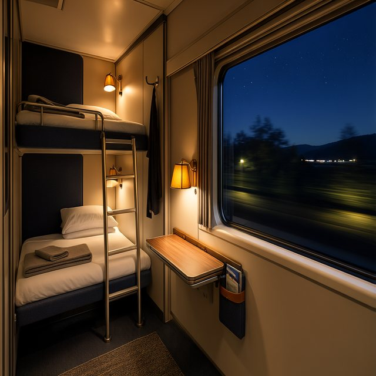
Aesthetics 80 → 30, RWF 80 → 30, the rest unchanged. The compartment has no circles or people that would make distortion obvious, and the two look almost the same. Judge instability.
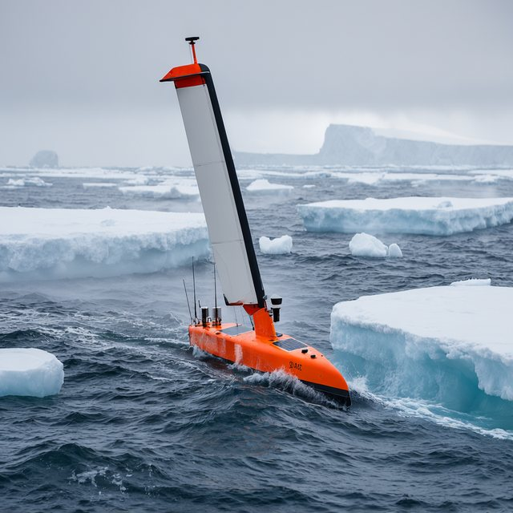
Quality 100 → 43, Alignment 87 → 70. Only a 1.33× change; drone and ice look nearly the same, yet Quality drops 57 points. Judge instability.
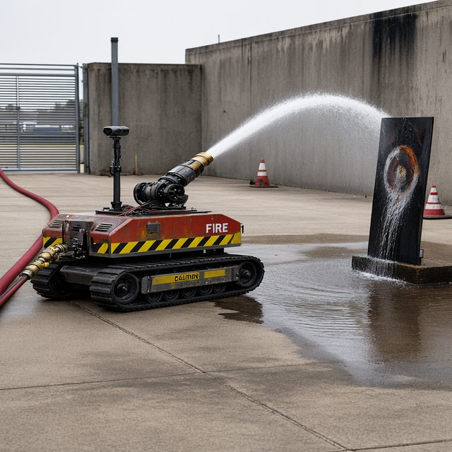
Alignment 34 → 68, RWF 30 → 80. The robot is stretched wider, yet the score goes up. Judge instability.
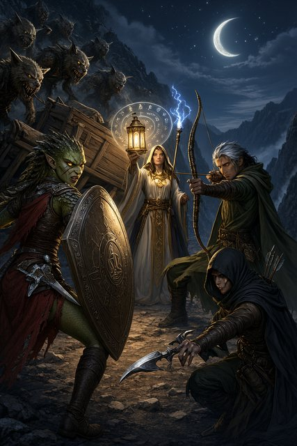
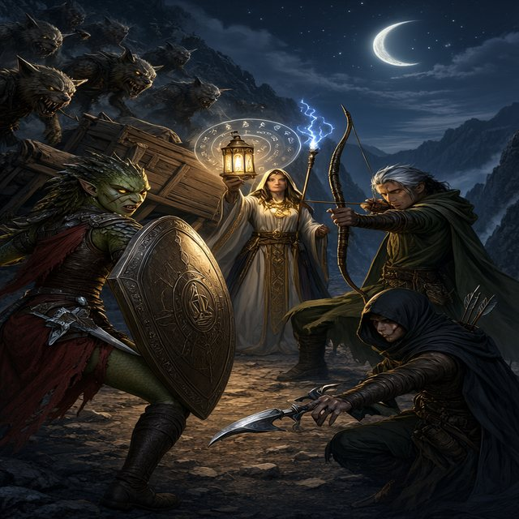
Aesthetics 80 → 30, Alignment 44 → 26, Quality 50 → 43. The figures are stretched 1.5× and look visibly wider, so a drop is warranted; a 50-point Aesthetics drop is too much. Right direction, inflated.
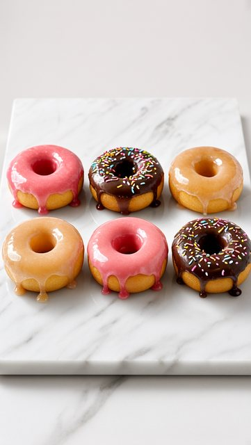
Quality 100 → 53, Aesthetics 100 → 60, Alignment 70 → 62. Stretched 1.78× wide, the donuts become flat ovals; the distortion is obvious. Justified.
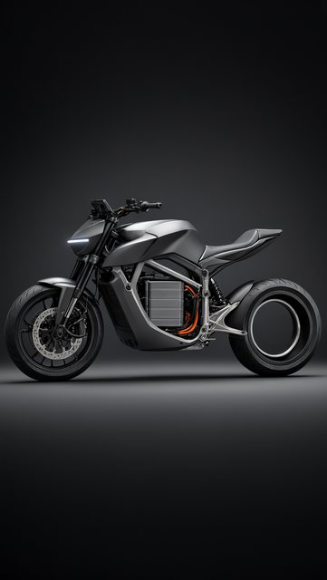
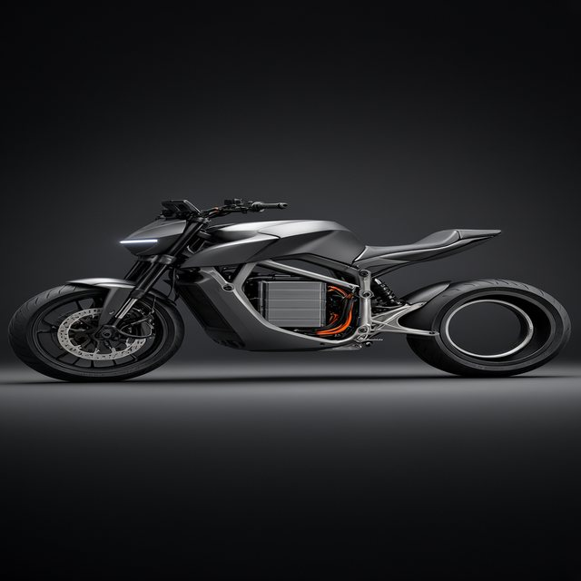
Creative 0 → 76, Aesthetics 48 → 60. The motorcycle is stretched 1.78× and its wheels become ovals, yet the score goes up, perhaps because the bike now fills more of the frame. This is also example 3 in section 4: at 9:16 its Creative fell from 100 (at 1:1) to 0. Judge instability.
| Example | Ratio | Aspect change | Δ | Verdict |
|---|---|---|---|---|
| cosmos500_0001 | 16:9 | 1.78× | −35.6 | Justified, Alignment overdone |
| arena1000_0825 | 9:16 | 1.78× | −31.6 | Justified |
| arena1000_0424 | 2:3 | 1.5× | −24.9 | Right direction, inflated |
| arena1000_0870 | 3:2 | 1.5× | −25.0 | Judge instability |
| cosmos500_0051 | 4:3 | 1.33× | −21.1 | Judge instability |
| cosmos500_0027 | 3:4 | 1.33× | +21.0 | Judge instability |
| arena1000_0468 | 9:16 | 1.78× | +22.0 | Judge instability |
- Obvious distortion is penalized for good reason: at 1.78× (16:9 and 9:16) rings and donuts turn into ovals, and the drops hold up.
- With mild distortion, single-image scores are mostly noise: 4:3 and 3:2 type changes (1.33× to 1.5×) are barely visible, yet single images drop or gain more than 20 points.
- 4 of the 7 are judge instability. This agrees with the rest of the Aspect ratio tab: the averages show the effect of distortion, single-image scores do not.
4. Nine examples
From the 6 non-square ratios we picked images with the largest |Δ|, both gains and drops, and compared the two images to judge whether the score change reflects a real change in the image or judge instability. Left is 1:1, right is mix7.
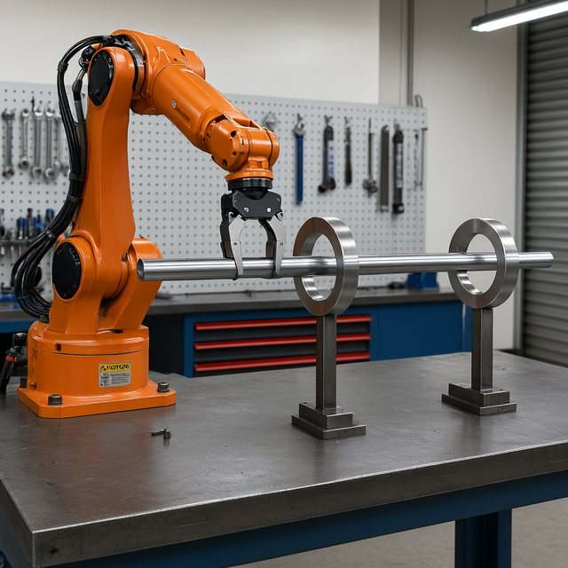
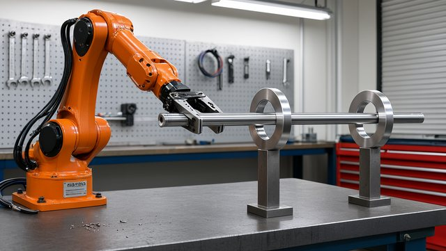
Quality 50 → 83, Aesthetics 53 → 100, Alignment 32 → 70. At 1:1 the gripper does not actually hold the shaft; at 16:9 there is room to lay it out, the grip is right and the shaft goes through both rings. The gain is justified: the image itself is better.
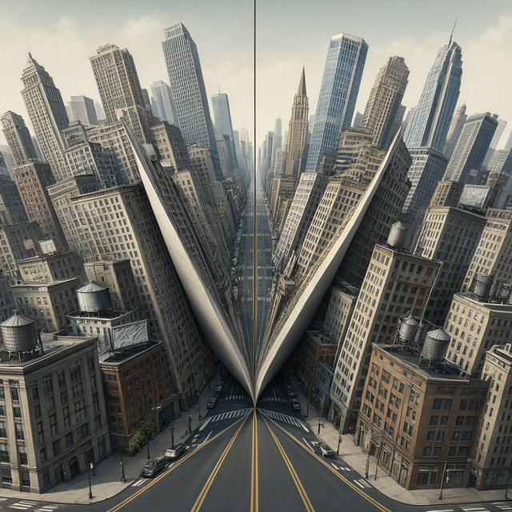
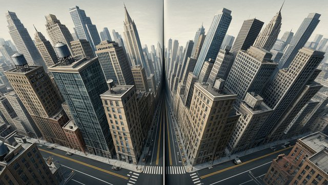
Quality 100 → 64, Alignment 8 → 0, Creative Generation 100 → 0. The 1:1 image shows the crease and the fold; the 16:9 one just puts two halves side by side, with no paper-fold feel. The drop is justified: the content really got worse.
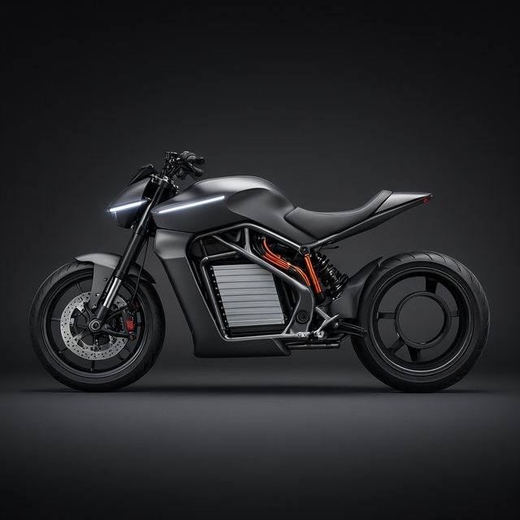

Aesthetics 60 → 48, Creative Generation 100 → 0, the rest unchanged. The two designs are nearly identical; in the tall frame the bike is just smaller with more empty space. Creative dropping all the way from 100 to 0 is too much; this one is judge instability.
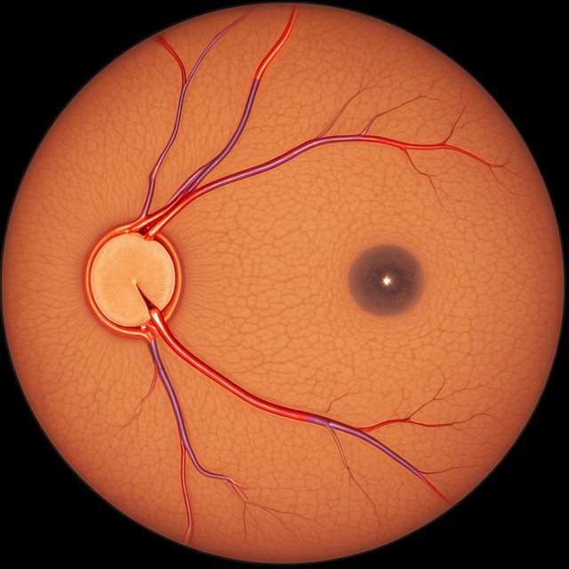
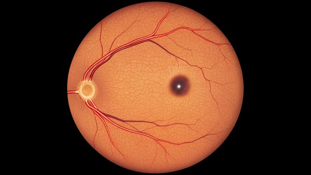
Quality 33 → 93, RWF 30 → 80, Alignment 26 → 42, Aesthetics 45 → 36. At 1:1 the optic disc is oversized and the vessels purplish, like a diagram; at 16:9 the disc is a normal size and the vessels fine and natural, much closer to a real fundus photo. The gain is justified.
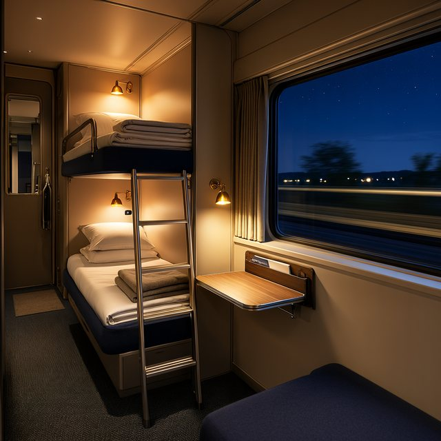
Aesthetics 45 → 80, RWF 30 → 80, the rest unchanged. The 3:2 composition is cleaner; the 1:1 one has a stray blue cushion in the foreground. But overall the two are close in quality: right direction, magnitude inflated by the judge.
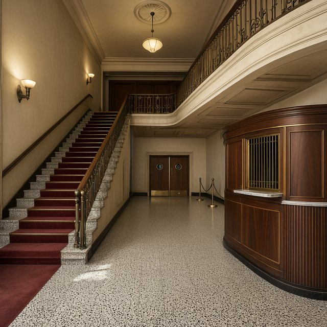
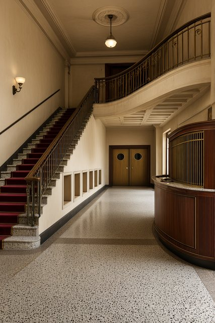
Aesthetics 30 → 100, Quality 50 → 71, Alignment 48 → 55. The 2:3 image draws the wall niches and the 1:1 one does not, so the small Alignment gain is justified. But the two look similar in quality, and Aesthetics jumping from 30 to 100 is not: mostly judge instability.
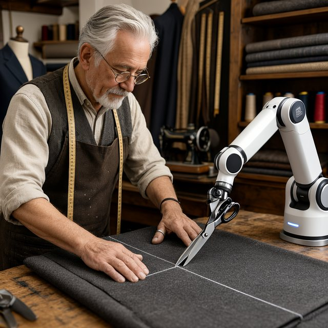
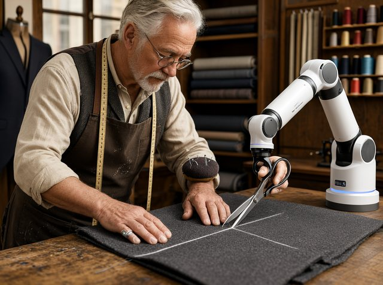
Alignment 83 → 44, Aesthetics 68 → 48, Quality 57 → 43. At 4:3 the scissors are closer to the tailor's hand and the blade is off the chalk line, so the Alignment drop is justified; a 20-point Aesthetics drop is too much. Right direction, magnitude inflated.
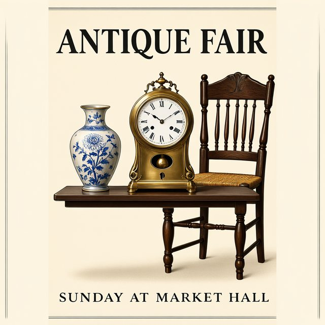
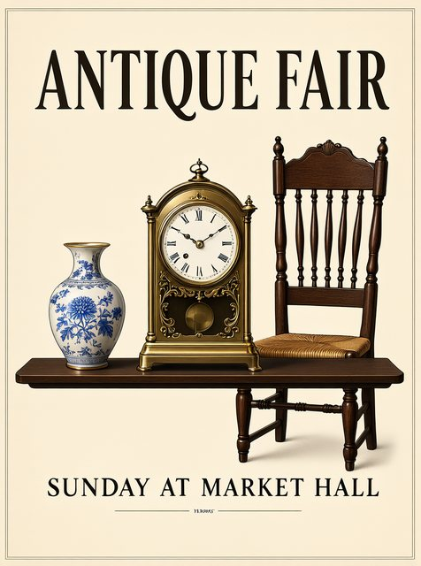
Creative 100 → 42, Aesthetics 68 → 36, Quality 83 → 61. The 3:4 poster has an extra line of illegible small text at the bottom, so the Creative (text rendering) drop is justified; but heading and layout are still fine, and a 32-point Aesthetics drop is too much. Right direction, magnitude inflated.
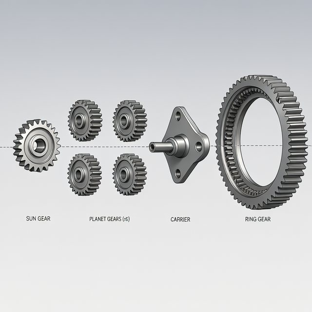
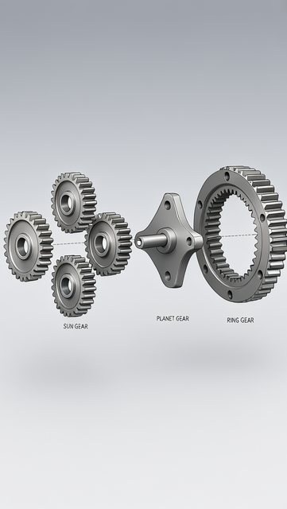
Aesthetics 100 → 45, Quality 76 → 54, Alignment 40 → 22, RWF 55 → 30. A horizontally exploded view squeezed into a tall frame: the parts become tiny, the planet gears bunch together and the labels are barely legible. The drop is justified.
5. Verdicts
| # | Example | Ratio | Δ | Verdict | Why |
|---|---|---|---|---|---|
| 1 | cosmos500_0001 | 16:9 | +39.2 | Justified | The wide frame gets shaft and rings right |
| 2 | arena1000_0630 | 16:9 | −35.8 | Justified | 16:9 loses the fold |
| 4 | cosmos500_0470 | 16:9 | +29.1 | Justified | 16:9 looks like a real fundus |
| 9 | cosmos500_0448 | 9:16 | −23.8 | Justified | Wide exploded view in a tall frame, parts too small |
| 5 | arena1000_0870 | 3:2 | +21.2 | Right direction, inflated | Cleaner composition, but similar quality |
| 7 | cosmos500_0079 | 4:3 | −24.0 | Right direction, inflated | Scissors near the hand; Aesthetics drops too much |
| 8 | arena1000_0089 | 3:4 | −26.9 | Right direction, inflated | Extra garbled small text; Aesthetics drops too much |
| 3 | arena1000_0468 | 9:16 | −28.0 | Judge instability | Nearly identical design, Creative 100 → 0 |
| 6 | cosmos500_0257 | 2:3 | +32.6 | Judge instability | Similar quality, Aesthetics 30 → 100 |
All 9 are extreme cases with large |Δ| and do not represent the average.
6. Conclusions
- Scoring the same image again changes the score. In a full rescore of all 1500 images, the per-image total std is 3.6, up to 27 points, with Creative the least stable (see the Judge noise tab).
- Non-square images must reach the judge with their aspect ratio kept. Squashing the same content to 1:1 costs non-square images 2 to 3.4 points on average, in Quality, RWF and Aesthetics (section 3).
- Large swings mix real change with judge noise. Of the 9 non-square examples, 4 reflect the image really getting better or worse, 3 go the right way but are inflated by the judge, and 2 are essentially judge instability.
- Changing the aspect ratio really does change the image. Wide subjects (a shaft, an exploded view, a bike seen side-on) lose in a tall frame: the subject shrinks, empty space grows, and the layout can even break; in a wide frame they gain.
- The judge is least stable on Aesthetics and Creative Generation. For two similar images Aesthetics can jump from 30 to 100; Creative often tests only one or two L3s and scores close to 100 or 0, so a small change can flip the whole item.
- On average, the effect is small. Moves go both ways; landscape sizes gain 1 to 2 points on average. Set-level averages are reasonably reliable, but single-image scores should not be used to decide which ratio is better.
- Still to verify: have one comparison model render a 16:9 set too. If it also gains about 2 points, the judge prefers wide frames; if it barely moves, the gain belongs to cosmos3 itself.
1. Scoring the same image twice
The 1500 images of the cosmos3-super-text2image 1:1 run were handed to the judge again unchanged (saved as qimagebench_result_rescore1.json; the original result is untouched). The judge uses greedy decoding (temperature 0, seed 42), so the two scores should match; they do not.
How much one image moves on a rescore (Δ = first − rescore, in points)
Each image gets its own Δ; below are the mean, std, min and max of those Δ.
Only images scored both times count; RWF and Creative are only scored on prompts that test them, so they have fewer images.
An earlier estimate used the 213 mix7 prompts assigned 1:1 as a control (their images are nearly pixel-identical to the 1:1 run) and gave a per-image Δ std of 4.44; the same 213 prompts give 4.05 in this full rescore. That batch is noisier than average, so the full-set 3.58 is the more representative number.
The likely cause is numerical: vLLM's floating-point results vary slightly with batch composition, and the judge writes a long thinking trace before answering, so once one token diverges the conclusion can change. This has not been verified separately.
2. Std of the overall score vs. number of images
Scoring the same image twice, the per-image total differs with std 3.58. Averaging N images, the std of the difference between two overall scores is 3.58 / √N. The curve below plots that for N from 1 to 5000; the dashed line is the 95% range (1.96×). When two models are each scored once, the noise in their score gap is the same size.
The curve weights all images equally. The actual overall is the equal-weight mean of arena1000 and cosmos500, so the expected std at 1500 images is 0.10, slightly above the curve’s 0.092; the actual difference of −0.12 falls inside the 95% range.
3. 10 cases
The 10 images whose per-image total moved the most in the full rescore. Both scorings used the same image file.
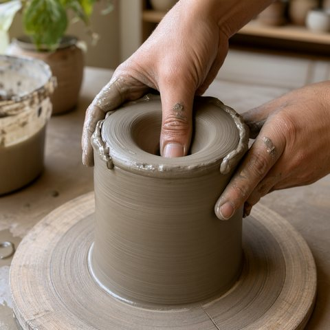
| L1 / L3 | First | Rescore |
|---|---|---|
| Creative / Logical Resolution | 0 | 100 |
| Quality / Naturalness | 0 | 60 |
Single-item flip. For this prompt Creative is graded on Logical Resolution alone; it flips from 0 to 100, so Creative jumps from 0 to 100. The same image also scored 68.6 in the mix7 run, so two of three scorings give 68.6 and the outlier is the first one.
| L1 / L3 | First | Rescore |
|---|---|---|
| Aesthetics / Anatomical Fidelity | 0 | 100 |
| Aesthetics / Composition, Color Harmony, Lighting, Emotional Expression | 60 | 100 |
| Quality / Material Texture | 60 | 100 |
Block shift. Five Aesthetics items jump up together: four from Pass to Excel and anatomy straight from Fail to Excel, so Aesthetics goes from 48 to 100.
| L1 / L3 | First | Rescore |
|---|---|---|
| Creative / Logical Resolution | 100 | 0 |
| Creative / Shot Sizes | 100 | 60 |
| Quality / Edge Clarity | 60 | 0 |
Single-item flip. The opposite of the pottery case: Logical Resolution goes straight from Excel to Fail, so Creative drops from 100 to 30.
| L1 / L3 | First | Rescore |
|---|---|---|
| Quality / Material Texture | 0 | 100 |
| Quality / Naturalness | 0 | 60 |
| Aesthetics / Composition, Color Harmony, Lighting | 60 | 100 |
| Alignment / Quantity | 60 | 0 |
| Alignment / Composition Relationship | 0 | 60 |
Ups and downs at once. Material texture jumps from Fail to Excel and three Aesthetics items move up a grade, while Quantity drops from Pass to Fail. This image scored 53.6 in the mix7 run, so its three scorings are 40.6, 53.6 and 58.7.
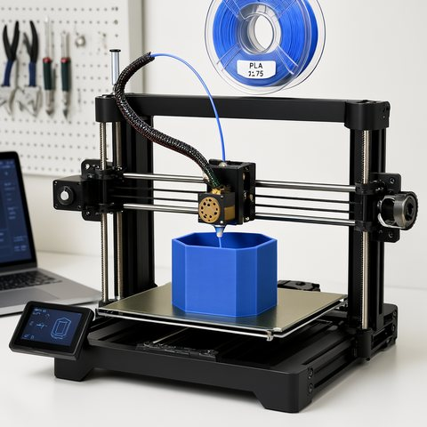
| L1 / L3 | First | Rescore |
|---|---|---|
| Quality / Naturalness | 100 | 0 |
| Quality / Material Texture, Noise, Edge Clarity, Resolution | 100 | 60 |
| Aesthetics / Composition | 60 | 0 |
| Alignment / Real-world Scene | 100 | 60 |
Block shift. Five Quality items drop together: four from Excel to Pass and naturalness straight from Excel to Fail, so Quality falls from 83 to 43.
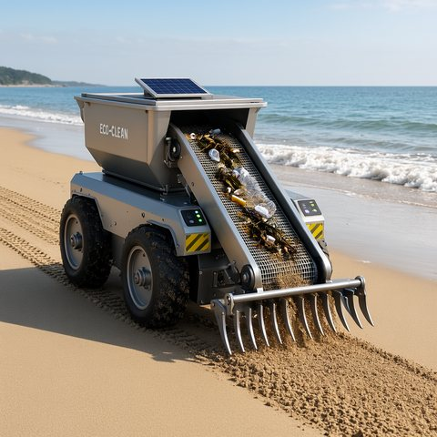
| L1 / L3 | First | Rescore |
|---|---|---|
| Alignment / 3D Space, Composition Relationship | 60 | 0 |
| Alignment / Real-world Scene | 100 | 60 |
| Alignment / Full-body Action | 60 | N/A |
| Creative / Product Design | 100 | 0 |
Pass and Fail swap. Two Alignment items go from Pass to Fail and one goes from scored to not applicable, so Alignment drops from 59 to 27; Product Design goes straight from Excel to Fail.
| L1 / L3 | First | Rescore |
|---|---|---|
| Aesthetics / Composition | 0 | 100 |
| Aesthetics / Color Harmony, Lighting, Emotional Expression | 60 | 100 |
| Aesthetics / Style Control | N/A | 100 |
| Alignment / Real-world Scene | 60 | 100 |
Block shift. Aesthetics jumps as a block: composition goes straight from Fail to Excel, three items rise from Pass to Excel, and style control goes from N/A to scored, so Aesthetics goes from 45 to 100.
| L1 / L3 | First | Rescore |
|---|---|---|
| Creative / Spatial Design | 0 | 100 |
| Creative / Feature Matching, Logical Resolution | 0 | 60 |
| Alignment / 3D Space | 0 | 60 |
Fail turns into Pass or Excel. All three Creative items climb out of Fail, so Creative goes from 25 to 80. On the same image, spatial design is judged a fail once and excellent once.
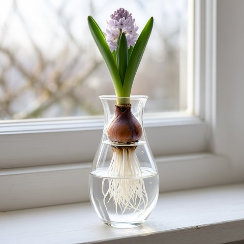
| L1 / L3 | First | Rescore |
|---|---|---|
| RWF / World Knowledge · Objects | 0 | 100 |
| Quality / Naturalness | 0 | 60 |
| Alignment / Composition Relationship | 0 | 60 |
Single flip. The world-knowledge objects item goes straight from Fail to Excel, so RWF goes from 30 to 80. In the image the bulb base is indeed above the water, so the first score is the more likely mistake.
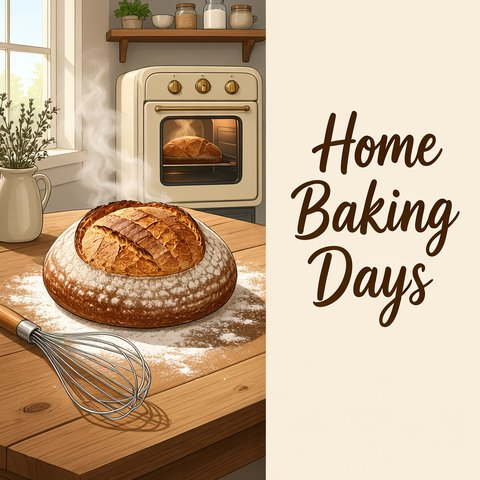
| L1 / L3 | First | Rescore |
|---|---|---|
| Aesthetics / Composition, Color Harmony, Lighting, Emotional Expression, Style Control | 60 | 100 |
| Alignment / Composition Relationship | 0 | 60 |
| Alignment / Containment | 60 | 0 |
| Creative / Logical Resolution | 0 | N/A |
Block shift plus moves both ways. All five Aesthetics items rise from Pass to Excel, so Aesthetics goes from 60 to 100; one Alignment item goes up and one goes down, cancelling out; Creative’s logic item goes from Fail to N/A, so Creative rises from 58 to 78.
1. Setup
| Model | Prompt upsampling | Prompt fed to the model | Resolution | Sampling / other | Images | run |
|---|---|---|---|---|---|---|
| GPT-image-2.5 sunburst, high | None (handled inside the API) | Original prompt (natural language) | 1024² | quality=high | 1165/1170 | gpt_image_2p5_sunburst_quality_high |
| GPT-image-2.5 sunburst, low | None (handled inside the API) | Original prompt (natural language) | 1024² | quality=low (gateway default) | 1167/1170 | gpt_image_2p5_sunburst |
| GPT-image-2, high | None (handled inside the API) | Original prompt (natural language) | 1024² | quality=high | 1166/1170 | gpt_image_2_quality_high |
| GPT-image-2, low | None (handled inside the API) | Original prompt (natural language) | 1024² | quality=low (gateway default) | 1168/1170 | gpt_image_2 |
| Nano Banana 2 (Gemini 3.1 flash image) | None (handled inside the API) | Original prompt (natural language) | 1024² | gateway gcp/google/gemini-3.1-flash-image, 1k, 1:1 | 1169/1170 | gemini_3_1_flash_image |
| FLUX.3 klein-base (5.6B) | Claude Opus 4.8 + official BFL system prompt | Rewritten full scene description (natural language) | 1024² | 50 steps, cfg 3.5 | 1167/1170 | flux3_klein_base |
| FLUX.3 klein (5.6B, distilled) | Same as above | Same as above | 1024² | Distilled, 16 steps, no guidance | 1167/1170 | flux3_klein |
| Fibo 2.0 dev (8.1B) | bria-vgl + gemini-3.5-flash-lite | Structured VGL JSON | 1024² | 50 steps, cfg 5.0, official JSON negative prompt and fonts | 1167/1170 | fibo2_dev |
| Qwen-Image 2.1, nope | None | Original prompt (natural language) | 2048² | 40 steps, pipeline-default cfg, no negative prompt | 1170/1170 | qwen_image_2p1_nope |
| Qwen-Image 2.1, pe | Official PE model Qwen-Image-2.1-PE-T2I (thinking on, temperature 1.0) | Rewritten natural language | 2048² | 40 steps, pipeline-default cfg, no negative prompt | 1170/1170 | qwen_image_2p1_pe |
| Ideogram 4 nf4 (9.3B×2) | Claude Opus 4.8 + official v1.txt system prompt | Structured JSON (high_level_description, compositional_deconstruction) | 1024² | 48 steps (pipeline default), two-branch CFG | 1166/1170 | ideogram4_nf4 |
| Krea 2 Turbo (12.8B) | None | Original prompt (natural language) | 1024² | Distilled, 8 steps, cfg 0 | 1170/1170 | krea2_turbo |
| cosmos3-super-text2image | Opus 4.7 rewrite into Cosmos3 JSON (v2_1170L_opus4p7_for_ga) | JSON | 1024² | 50 steps, cfg 4, cosmos3 negative prompt; EMA weights | 1170/1170 | — |
| Cosmos3.5 Ultra v3p4 (pretrain) | GPT-5.5 dense rewrite (v2_1170L_gpt5p5_cosmos3p5_dense_hamid) | Rewritten dense prompt | 960² | cfg 4, shift 3, CFG at every step, seed = row index, no negative prompt; EMA; iter360000, no SFT | 1170/1170 | — |
All runs are scored with the original v2_1170L prompts and testpoints; the judge is gemini-3.1-pro@nvidia (the two Qwen-Image runs list gemini-3.1-pro, which is the same model; scoring one image set under both names differs by less than 0.1). As with QImageBench, this is a system-level “rewrite + generate” comparison: public models use each vendor’s official rewrite flow, cosmos3-super-text2image uses an Opus 4.7 JSON rewrite, and Cosmos3.5 Ultra uses a GPT-5.5 dense rewrite. Krea 2 Turbo and Ideogram 4 were generated at 1024² under the old setup, not the officially recommended 2048², so their scores may be underestimated.
2. Overall scores
The table shows raw accuracy (%); overall pools all testpoints from the orig and phi halves. Cosmos rows are bold; underline marks the best score in each column.
3. L1 dimensions
The table shows raw accuracy (%) for the selected subset; underline marks the best score in each column.
4. L2 dimensions
The table shows raw accuracy (%) per L2 for the selected subset and L1; underline marks the best score in each column. Style, World Knowledge, Logical Reasoning and Text Generation have a single L2 equal to the L1 and are not repeated here.
5. How scoring works
- UGB (UniGenBench
v2_1170L) has 1170 prompts split intoorig(the original prompts) andphi(the other half). Each prompt carries several testpoints; each testpoint belongs to one L2 category, and L2s roll up into 10 L1s. - The judge sees the image and the original prompt and marks each testpoint correct or incorrect.
- Accuracy = correct testpoints / total testpoints, counted per testpoint rather than averaged per prompt. L1 and L2 scores are the accuracy over that category’s testpoints; overall pools all testpoints from both subsets.
- Missing images are excluded from the denominator. API and open models lost 1–5 images to safety filters or upsampler failures (see “Images” in section 1); accuracy only counts samples that were scored.
- Noise reference: scoring one image set with
gemini-3.1-proand withgemini-3.1-pro@nvidiadiffers by 0.01–0.11 overall.
Testpoints per L1 (overall): Style 616, World Knowledge 327, Attribute 2586, Compound 413, Entity Layout 1102, Action 1518, Grammar 227, Relationship 1005, Logical Reasoning 154, Text Generation 207.
AA leaderboard captured: 2026-11-09, about 16:30 PST. Source: the AA-Image-T2I v2.1 board (artificialanalysis.ai/image/leaderboard/text-to-image), 108 models at the time. The page has no last-updated stamp, and the AA board will keep changing.
1. QImageBench ↔ AA
Our tested models mapped to entries on the current Artificial Analysis (AA) text-to-image leaderboard, with the two rankings compared. The AA board is an Elo from blind pairwise human votes and serves as a human-preference reference. Hover over a line to see the matching AA entry and how close the match is (exact or approximate). cosmos3-x9c, the cosmos3 16:9 / mix7 runs and Cosmos3.5 Ultra are not on the AA board and are not drawn. Correlations for every subset are in section 3.
2. UGB ↔ AA
3. Rank correlation by subset
| Benchmark / subset | Models | Spearman | Kendall | Pearson (with Elo) | Spearman without cosmos3 | Pearson without cosmos3 |
|---|---|---|---|---|---|---|
| QImageBench overall | 7 | +0.89 | +0.81 | +0.91 | +0.83 | +0.94 |
| QImageBench cosmos500 | 7 | +0.89 | +0.81 | +0.90 | +0.83 | +0.94 |
| QImageBench arena1000 | 7 | +0.89 | +0.81 | +0.91 | +0.83 | +0.94 |
| QImageBench arena1000_ocr | 7 | +0.96 | +0.90 | +0.82 | +0.94 | +0.87 |
| QImageBench arena1000_noocr | 7 | +0.86 | +0.71 | +0.96 | +0.77 | +0.95 |
| UGB overall | 9 | +0.68 | +0.56 | +0.77 | +0.90 | +0.96 |
| UGB orig | 9 | +0.73 | +0.67 | +0.76 | +0.98 | +0.95 |
| UGB phi | 9 | +0.57 | +0.44 | +0.74 | +0.74 | +0.91 |
Spearman: how far each model's rank moves. Both sides are converted to ranks and ρ = 1 − 6·Σd² / (n(n² − 1)), where d is a model's rank difference between the two sides. Example: among the 7 models in QImageBench vs AA, Ideogram 4 is off by 2 places, FLUX.3 klein and Fibo 2.0 by 1 each, the rest match; Σd² = 4 + 1 + 1 = 6, so ρ = 1 − 36 / 336 = 0.89. Rank differences are squared, so one model jumping many places costs a lot.
Kendall: how many pairs of models are in the opposite order. All models are paired up; a pair is concordant if both sides agree on which is higher and discordant otherwise, and τ = (concordant − discordant) / number of pairs. Example: 7 models make 21 pairs, and only "Ideogram 4 vs FLUX.3 klein" and "Ideogram 4 vs Fibo 2.0" are reversed, so τ = (19 − 2) / 21 = 0.81, which reads directly as "2 of 21 pairs are in the opposite order".
Pearson: whether scores and Elo values are proportional. No conversion to ranks; it is the linear correlation of the raw values. When the order is right but the gaps are not proportional to Elo, Pearson drops; for example, arena1000_ocr has Spearman 0.96 but Pearson only 0.82.
All three range from −1 to 1: 1 means fully consistent, 0 means unrelated, −1 means fully reversed. Each comparison here has only 6 to 9 models, so one model changing place moves the coefficient a lot.